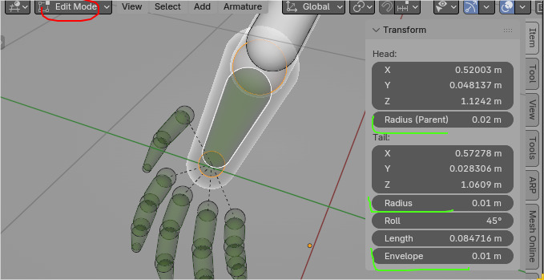
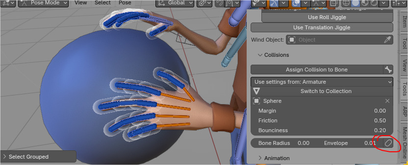
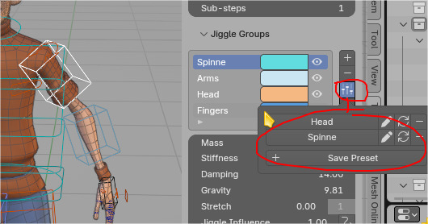
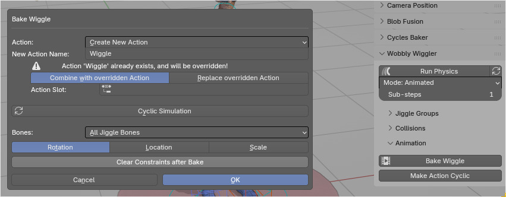
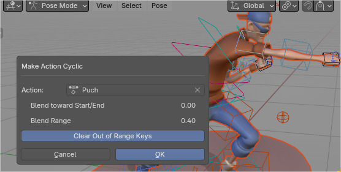
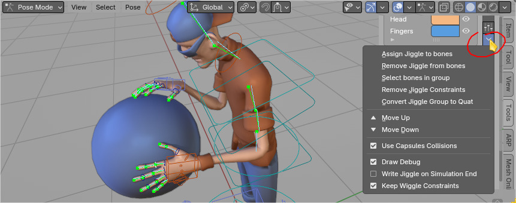

Wobbly Wiggler
Wobbly Wiggler (WW) is Blender add-on for adding jiggle simulation on top of animated bones.
Demo of same animation with and without jiggle
You are tired of manually adding secondary motion to your character? Wobbly Wiggler will do that for you.
Demo of same animation with and without jiggle
Location
Right sidebar of Blender 3D View > Tools Tab > Wobbly Wiggler panel
Tools category can be changed in WW preferences)
Demo of jiggle applied to AutoRig Pro rig. Optional translation and roll jiggle can be toggled. All similated in `Interactive' mode
How To Use - Quick Start
- Enter armature pose mode and select few bones,
- in Wobbly Wiggler Panel > Click [+] button to assign jiggle physics,
- press
Run Spring(animation has to be playing if you use 'Animated' mode - see below)
To assign new bones to existing jiggle group, use Assign Jiggle to bones button from WW Menu.
Simulation Mode
Jiggle Physics can be run in two Modes:
- Interactive - good for mouse interaction with jiggle bones, but it won't work when baking/rendering animation
- Animated - only works when animation playback is enabled. Useful when rendering animation.
Jiggle Settings
Demo of how tweaking jiggle: mass, stiffness, damping and gravity affects the simulation. Add done in 'Interactive' mode
Note: Higher stiffness (or lower mass) results in increased oscillation frequency.
Note: Due to the implementation of the physics solver, event if damping is set to 0, there will be some energy loss in the system.
Jiggle Influence
It can be animated to mute jiggle effect at specific frames, for example, in video below, at fist impacts.
Left: full jiggle influence. Notice how spine and arms movement feel sloppy and lack the snappiness, due to smoothed out movement. Right: I muted jiggle influence at fist impacts, and at the beginning of spine moving forward. It results in more controlled and snappy motion.
Wind
You can use empty as wind source. Wind strength and direction can be animated. Wind noise feature works only in Animated mode.
Demo of how wind can affect effect jiggle bones. Demo uses Animated mode
With Wind Influence you can control how much wind affects selected jiggle group. This way you can disable wind effect for fingers.
Translation Jiggle
Demo of trannslation jiggle on character root bone (pelvis)
Note: Translation jiggle works only on not connected bones (bones without parent or with disconnected parent).
Roll Jiggle
It unlocks roll rotation (twist around bone local Y axis) jiggle.
Demo of roll jiggle on character root bone (pelvis)
Maximum Angle
It limits maximum angle of jiggle bone rotation. Set it to 0.0 to disable angle limit.
Demo of applying maximum angle limit on finger bones - to prevent them from spreading too much
Collisions
Wobbly Wiggler supports bone to bone, bone to mesh and bone to collection collisions.
Bones (finger) to mesh (sphere) collisions. Tweaking bone envelope size helps to achieve proper collision distances
Bone to bone collisions. Use Assign Collisions to Bone button to enable these kind of collisions
 Bone collision shape and distances are defined by its envelope properties: head radius, tail radius, envelope (works as additional collision margin)
To edit multiple selected bones envelopes WWiggler exposes two helper sliders:
- Bone Radius
- Envelope
See bottom of 'Collisions' section on image below.
 You can quickly visualize bone envelopes by using Capsule icon button. Press it again to reset bone rendering to its original state
Physics presets
You can create multiple physics presets in Wobbly Wiggler using Presets button - marked red on image below.

From Presets popover you can: add, remove or refresh physics presets. You can also rename currently selected preset clicking on pen incon
Baking Jiggle Animation
WWiggler has operator for baking jiggle physics into animation action.
Baking jiggle simulation, on top of rig 'Jump' action, into new separate action called Wiggle. New action keyframes are completely separate from Jump animation
Baking Options
This operator is similar to Blender's built-in Bake Action operator, but with additional options specific to jiggle simulation.

-
Action: create new action or combine with existing one
-
New Action Name Warning will be displayed if action with the same name already exists.
-
Combine with overridden Action / Replace overridden Action Buttons to choose whether to merge with or overwrite an existing action with the same name.
-
Action Slot For new Blender 4.5 slotted actions
-
Cyclic Simulation Indicates that the simulation will loop continuously.
- Warmup Cycles when 'Cyclic Simulation' is enabled, this will animate run simulation N number of times before the final bake, to stabilize the results.
-
Bones Dropdown to select which bones to bake (e.g., All Jiggle Bones).
-
Rotation / Location / Scale choose which transformation properties to bake: rotation, location and (or) scale.
-
Clear Constraints after Bake Button to remove constraints from bones after baking.
Note: If you are redoing bake onto previously baked Wiggle action, make sure to use
Replace overridden Actionoption, otherwise you will end up with new simulation being run on top of previously baked jiggle.
Make Action Cyclic
Operator for blending of animation start with end. It uses: position, angle, position velocity and angular velocity blending for more realistic results - based on inertialization technique used in Gears of War. It works with any action, not just those created with Wobbly Wiggler.
Puch animation end does not match the beginning. Using 'Make Action Cyclic' operator to blend animation start with end
Make Cyclic - Options

- Action: choose action to make cyclic
- Blend toward Start/End: 0 - blend ending key-frames toward start, 1 - blend starting key-frames toward end, 0.5 - blend equally toward start and end
- Blend Range: length of blending in frames. Longer range results in smoother transition, but it also affects more of the animation.
WW Menu
Wobbly Wiggler menu is located next to listing of jiggle groups. It contains few useful operators. 
-
Assign Jiggle to bones Assigns active jiggle physics preset to the selected bones.
-
Remove Jiggle from bones Removes jiggle physics from the selected bones.
-
Select bones in group Selects all bones that belong to the active jiggle group.
-
Remove Jiggle Constraints Deletes jiggle-related constraints from the selected group.
-
Convert Jiggle Group to Quat Converts rotation of bones that belong to active jiggle group to quaternion mode.
-
Move Up / Move Down Changes the order of the jiggle group in the list.
-
Use Capsules Collisions Use higher quality capsule-shaped bone to bone collisions.
-
Draw Debug Displays debug visualization for jiggle physics. Visible on image above.
-
Write Jiggle on Simulation End Write jiggle simulation into bone transformation when the simulation finishes.
-
Keep Wiggle Constraints Retains wiggle constraints after simulation is stopped. They will be muted instead of being removed.